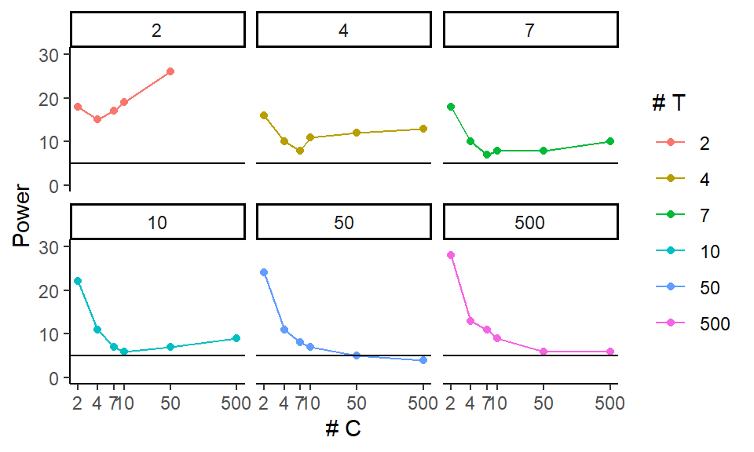

Chapter 16 Case study: The Power and Validity of Neyman’s ATE Estimate
The way to build a simulation experiment is to first write code to run a specific simulation for a specific scenario. Once that is working, we will re-use the code to systematically explore a variety of scenarios so we can see how things change as scenario changes. Next I would build up this system.
For our running example we are going to look at a randomized experiment. We will assume the treatment and control groups are normally distributed with two different means. We will generate a random data set, estimate the treatment effect by taking the difference in means and calculating the associated standard error, and generating a \(p\)-value using the normal approximation. (As we will see, this is not a good idea for small sample size since we should be using a \(t\)-test style approach.)
16.1 Step 1: Write a function for a specific simulation given specific parameters.
Our function will generate two groups of the given sizes, one treatment and one control, and then calculate the difference in means. It will then test this difference using the normal approximation.
The function also calculates and returns the effect size as the treatment effect divided by the control standard deviation (useful for understanding power, shown later on).
run.one = function( nC, nT, sd, tau, mu = 5 ) {
Y0 = mu + rnorm( nC, sd=sd )
Y1 = mu + tau + rnorm( nT, sd=sd )
tau.hat = mean( Y1 ) - mean( Y0 )
SE.hat = sqrt( var( Y0 ) / ( nC ) + var( Y1 ) / ( nT ) )
z = tau.hat / SE.hat
pv = 2 * (1 - pnorm( abs( z ) ))
data.frame( tau.hat = tau.hat, ES = tau / sd, SE.hat = SE.hat, z=z, p.value=pv )
}A single run will generate a data set, analyze it, and give us back a variety of results as a one-row dataframe. It will turn out that having results in a dataframe makes using the tidyverse easier.
run.one( nT=5, nC=10, sd=1, tau=0.5 )## tau.hat ES SE.hat z p.value
## 1 0.0540692 0.5 0.5395857 0.100205 0.920181616.1.1 Running our single trial more than once
We replicate() and then stack everything to get all our results.
eres <- replicate( 500, run.one( nC=10, nT=10, sd=1, tau=0.5 ), simplify = FALSE )
eres = bind_rows( eres )Now we see why the dataframe return value of run.one is useful: we can then
stack all of our simulation runs to get our final set of results.
Each row is a simulation run:
head( eres )
We then summarize our results with the dplyr summarise function. Our
summarization calculates the average treatment effect estimate E.tau.hat,
the average Standard Error estimate E.SE.hat, the average Effect Size ES,
and the power power (defined as the percent of time we reject at
alpha=0.05, i.e., the percent of times our \(p\)-value was less than our 0.05
threshold):
eres %>% summarise( E.tau.hat = mean( tau.hat ),
E.SE.hat = mean( SE.hat ),
ES = mean( ES ),
power = mean( p.value <= 0.05 ) )## E.tau.hat E.SE.hat ES power
## 1 0.5308502 0.4343176 0.5 0.242We bundle the above into a function that runs our single trial multiple times and summarizes the results:
run.experiment = function( nC, nT, sd, tau, mu = 5, R = 500 ) {
eres = replicate( R, run.one( nC, nT, sd, tau, mu ), simplify=FALSE )
eres = bind_rows( eres )
eres %>% summarise( E.tau.hat = mean( tau.hat ),
E.SE.hat = mean( SE.hat ),
ES = mean( ES ),
power = mean( p.value <= 0.05 ) ) %>%
mutate( nC=nC, nT=nT, sd=sd, tau=tau, mu=mu, R=R )
}Our function also adds in the details of the simulation (the parameters we passed
to the run.one() call). This is an easy way to keep track of things.
Test our function to see what we get:
run.experiment( 10, 3, 1, 0.5 )## E.tau.hat E.SE.hat ES power nC nT sd tau mu R
## 1 0.5032869 0.6139875 0.5 0.208 10 3 1 0.5 5 500Key point: We also want a dataframe back from run.experiment(), because,
after calling run.experiment() many times, we are going to stack the
results up to make one long dataframe of results. Happily the dplyr
package gives us dataframes so this is not a problem here.
16.2 Step 2: Make a dataframe of all experimental combinations desired
We use the above to run a multi-factor simulation experiment. We are going to vary four factors: control group size, treatment group size, standard deviation of the units, and the treatment effect.
We first set up the levels we want to have for each of our factors (these are our simulation parameters).
nC = c( 2, 4, 7, 10, 50, 500 )
nT = c( 2, 4, 7, 10, 50, 500 )
sds = c( 1, 2 )
tau = c( 0, 0.5, 1 )We then, using expand_grid() generate a dataframe of all
combinations of our factors.
experiments = expand_grid( nC=nC, nT=nT, sd=sds, tau=tau )
experiments## # A tibble: 216 × 4
## nC nT sd tau
## <dbl> <dbl> <dbl> <dbl>
## 1 2 2 1 0
## 2 2 2 1 0.5
## 3 2 2 1 1
## 4 2 2 2 0
## 5 2 2 2 0.5
## 6 2 2 2 1
## 7 2 4 1 0
## 8 2 4 1 0.5
## 9 2 4 1 1
## 10 2 4 2 0
## # … with 206 more rowsSee what we get? One row will correspond to a single experimental run. Note
how the parameters we would pass to run.experiment() correspond to the
columns of our dataset.
Also, is easy to end up running a lot of experiments! In this case we have 216!
We next run an experiment for each row of our dataframe of experiment factor
combinations using the pmap_df() function which will, for each row in our
dataframe, call run.experiment(), passing one parameter taken from each
column of our dataframe.
exp.res <- experiments %>% pmap_df( run.experiment, R=500 )The R=500 after run.experiment passes the same parameter of \(R=500\) to each
run (we run the same number of trials for each experiment).
Here is a peek at our results:
head( exp.res )## E.tau.hat E.SE.hat ES power nC nT sd tau mu R
## 1 0.01311053 0.8724541 0.00 0.196 2 2 1 0.0 5 500
## 2 0.53992204 0.8640737 0.50 0.228 2 2 1 0.5 5 500
## 3 0.98325407 0.8929156 1.00 0.340 2 2 1 1.0 5 500
## 4 0.01209447 1.7077286 0.00 0.170 2 2 2 0.0 5 500
## 5 0.39500948 1.8184304 0.25 0.176 2 2 2 0.5 5 500
## 6 1.05321453 1.8179832 0.50 0.230 2 2 2 1.0 5 500At this point you should save your simulation results to a file. This is especially true if the simulation happens to be quite time-intensive to run. Usually a csv file is sufficient.
We save using the tidyverse writing command; see “R for Data Science” textbook, 11.5.
dir.create("results", showWarnings = FALSE )
write_csv( exp.res, "results/simulation_results.csv" )16.3 Step 3: Explore results
Once your simulation is run, you want to evaluate the results. One would often put this code into a seperate ‘.R’ file that loads this saved file to start. This allows for easily changing how one analyzes an experiment without re-running the entire thing.
16.3.1 Visualizing experimental results
Plotting is always a good way to vizualize simulation results. Here we make
our tau and ES into factors, so ggplot behaves, and then plot all our
experiments as two rows based on one factor (sd) with the columns being
another (nT). (This style of plotting a bunch of small plots is called
“many multiples” and is beloved by Tufte.) Within each plot we have the
x-axis for one factor (nC) and multiple lines for the final factor (tau).
The \(y\)-axis is our outcome of interest, power. We add a 0.05 line to show
when we are rejecting at rates above our nominal \(\alpha\). This plot shows
the relationship of 5 variables.
exp.res = read_csv( "results/simulation_results.csv" )## Rows: 216 Columns: 10
## ── Column specification ────────────────────────────────────────────────────────
## Delimiter: ","
## dbl (10): E.tau.hat, E.SE.hat, ES, power, nC, nT, sd, tau, mu, R
##
## ℹ Use `spec()` to retrieve the full column specification for this data.
## ℹ Specify the column types or set `show_col_types = FALSE` to quiet this message.exp.res = exp.res %>% mutate( tau = as.factor( tau ),
ES = as.factor( ES ) )
ggplot( exp.res, aes( x=nC, y=power, group=tau, col=tau ) ) +
facet_grid( sd ~ nT, labeller=label_both ) +
geom_point() + geom_line() +
scale_x_log10() +
geom_hline( yintercept=0.05, col="black", lty=2)
Note: We are seeing elevated rejection rates under the null for small and even moderate sample size!
We can zoom in on specific simulations run, to get some more detail such as estimated power under the null for larger groups. Here we check and we are seeing rejection rates of around 0.05, which is what we want. filter( exp.res, tau==0, nT >= 50, nC >= 50 )
We can get fancy and look at rejection rate (power under tau = 0) as a
function of both nC and nT using an interaction-style plot:
exp.res.rej <- exp.res %>% filter( tau == 0 ) %>%
group_by( nC, nT ) %>%
summarize( power = mean( power ) )
exp.res.rej = mutate( exp.res.rej, power = round( power * 100 ) )ggplot( exp.res.rej, aes( x=nC, y=power, group=nT, col=as.factor(nT) ) ) +
facet_wrap( ~ nT ) +
geom_point() + geom_line() +
geom_hline( yintercept = 5 ) +
scale_y_continuous( limits = c( 0, 30 ) ) +
scale_x_log10( breaks = unique( exp.res.rej$nC ) ) +
labs( x = "# C", y = "Power", colour = "# T" )
Note: This plot is somewhat imperfect. Increasing the number of simulation runs per trial could help smooth out the trends. That being said, we see that small tx or co groups are both bad here.
16.3.2 Looking at main effects
We can ignore a factor and just look at another. This is looking at the main effect or marginal effect of the factor.
The easy way to do this is to let ggplot smooth our individual points on a
plot. Be sure to also plot the individual points to see variation, however.
ggplot( exp.res, aes( x=nC, y=power, group=tau, col=tau ) ) +
facet_grid( sd ~ ., labeller=label_both ) +
geom_jitter( width=0.02, height=0, alpha=0.5 ) +
geom_smooth( se = FALSE ) +
scale_x_log10( breaks=nC) +
geom_hline( yintercept=0.05, col="black", lty=2)
Note how we see our individual runs that we marginalize over.
To look at our main effects we can also summarize our results, averaging our experimental runs across other factor levels. For example, in the code below we average over the different treatment group sizes and standard deviations, and plot the marginalized results.
To marginalize, we group by the things we want to keep. summarise() then
averages over the things we want to get rid of.
exp.res.sum = exp.res %>% group_by( nC, tau ) %>%
summarise( power = mean( power ) )
head( exp.res.sum )## # A tibble: 6 × 3
## # Groups: nC [2]
## nC tau power
## <dbl> <fct> <dbl>
## 1 2 0 0.211
## 2 2 0.5 0.243
## 3 2 1 0.348
## 4 4 0 0.116
## 5 4 0.5 0.174
## 6 4 1 0.306ggplot( exp.res.sum, aes( x=nC, y=power, group=tau, col=tau ) ) +
geom_line() + geom_point() +
scale_x_log10( breaks=nC) +
geom_hline( yintercept=0.05, col="black", lty=2)
We can try to get clever and look at other aspects of our experimental runs. The above suggests that the smaller of the two groups is dictating things going awry, in terms of elevated rejection rates under the null. We can also look at things in terms of some other more easily interpretable parameter (here we switch to effect size instead of raw treatment effect).
Given this, we might decide to look at total sample size or the smaller of
the two groups sample size and make plots that way (we are also subsetting to
just the sd=1 cases as there is nothing really different about the two
options; we probably should average across but this could reduce clarity of
the presentation of results):
exp.res <- exp.res %>% mutate( n = nC + nT,
n.min = pmin( nC, nT ) )ggplot( filter( exp.res, sd==1 ), aes( x=n, y=power, group=ES, col=ES ) ) +
geom_jitter( width=0.05, height=0) +
geom_smooth( se = FALSE, span = 1) +
scale_x_log10() +
geom_hline( yintercept=0.05, col="black", lty=2)
ggplot( filter( exp.res, sd==1 ), aes( x=n.min, y=power, group=ES, col=ES ) ) +
geom_jitter( width=0.05, height=0) +
geom_smooth( se = FALSE, span = 1) +
scale_x_log10() +
geom_hline( yintercept=0.05, col="black", lty=2)
Note the few observations out in the high n.min region for the second
plot—this plot is a bit strange in that the different levels along the
x-axis are assymetric with respect to each other. It is not balanced.
16.4 Addendum: Saving more details
Our exp.res dataframe from above has all our simulations, one simulation per row, with
our measured outcomes. This is ideally all we need to analyze.
That being said, sometimes we might want to use a lot of disk space and keep
much more. In particular, each row of exp.res corresponds to the summary
of a whole collection of individual runs. We might instead store all of
these runs.
To do this we just take the summarizing step out of our run.experiment()
run.experiment.raw = function( nC, nT, sd, tau, mu = 5, R = 500 ) {
eres = replicate( R, run.one( nC, nT, sd, tau, mu ), simplify = FALSE )
eres = bind_rows( eres )
eres <- mutate( eres, nC=nC, nT=nT, sd=sd, tau=tau, mu=mu, R=R )
eres
}Each call to run.experiment.raw() gives one row per run. We replicate our
simulation parameters for each row.
run.experiment.raw( 10, 3, 1, 0.5, R=4 )## tau.hat ES SE.hat z p.value nC nT sd tau mu R
## 1 0.6135525 0.5 0.8888169 0.6903025 0.490003969 10 3 1 0.5 5 4
## 2 0.2597831 0.5 0.5401115 0.4809804 0.630530436 10 3 1 0.5 5 4
## 3 0.4963473 0.5 0.5679538 0.8739219 0.382160761 10 3 1 0.5 5 4
## 4 1.3488370 0.5 0.4478926 3.0115187 0.002599444 10 3 1 0.5 5 4The advantage of this is we can then generate new outcome measures, as they occur to us, later on. The disadvantage is this result file will be \(R\) times as many rows as the older file, which can get quite, quite large.
But disk space is cheap! Here we run the same experiment with our more
complete storage. Note how the pmap_df stacks the
multiple rows from each run, giving us everything nicely bundled up:
exp.res.full <- experiments %>% pmap_df( run.experiment.raw, R=500 )
head( exp.res.full )## tau.hat ES SE.hat z p.value nC nT sd tau mu R
## 1 0.05413216 0 1.2243659 0.04421240 0.964735098 2 2 1 0 5 500
## 2 -0.98301948 0 0.3004194 -3.27215676 0.001067304 2 2 1 0 5 500
## 3 -0.35344487 0 0.9861798 -0.35839802 0.720045476 2 2 1 0 5 500
## 4 0.34626891 0 1.3413763 0.25814450 0.796295390 2 2 1 0 5 500
## 5 -0.02718350 0 0.9248855 -0.02939121 0.976552583 2 2 1 0 5 500
## 6 1.36147713 0 0.8812838 1.54487938 0.122375441 2 2 1 0 5 500We end up with a lot more rows:
nrow( exp.res.full )## [1] 108000nrow( exp.res )## [1] 216We next save our results:
write_csv( exp.res.full, "results/simulation_results_full.csv" )Compare the file sizes: one is several k, the other is around 12 megabytes.
file.size("results/simulation_results.csv") / 1024## [1] 13.47266file.size("results/simulation_results_full.csv") / 1024## [1] 10156.7716.4.1 Getting results ready for analysis
If we generated raw results then we need to collapse them by experimental run
before analyzing our results so we can explore the trends across the
experiments. We do this by borrowing the summarise code from inside
run.experiment():
exp.res.sum <- exp.res.full %>%
group_by( nC, nT, sd, tau, mu ) %>%
summarise( R = n(),
E.tau.hat = mean( tau.hat ),
SE = sd( tau.hat ),
E.SE.hat = mean( SE.hat ),
ES = mean( ES ),
power = mean( p.value <= 0.05 ) )Note how I added an extra estimation of the true \(SE\), just because I could!
This is an easier fix, sometimes, than running all the simulations again
after changing the run.experiment() method.
The results of summarizing during the simulation vs. after as we just did
leads to the same place, however, although the order of rows in our final
dataset are different (and we have a tibble instead of a data.frame, a
consequence of using the tidyverse, but this is not something to worry
about):
head( exp.res.sum )## # A tibble: 6 × 11
## # Groups: nC, nT, sd, tau [6]
## nC nT sd tau mu R E.tau.hat SE E.SE.hat ES power
## <dbl> <dbl> <dbl> <dbl> <dbl> <int> <dbl> <dbl> <dbl> <dbl> <dbl>
## 1 2 2 1 0 5 500 -0.0137 0.925 0.902 0 0.152
## 2 2 2 1 0.5 5 500 0.550 1.00 0.881 0.5 0.208
## 3 2 2 1 1 5 500 0.982 0.996 0.879 1 0.318
## 4 2 2 2 0 5 500 0.0901 2.05 1.69 0 0.214
## 5 2 2 2 0.5 5 500 0.507 1.97 1.77 0.25 0.21
## 6 2 2 2 1 5 500 1.10 1.88 1.80 0.5 0.206nrow( exp.res.sum )## [1] 216nrow( exp.res )## [1] 216